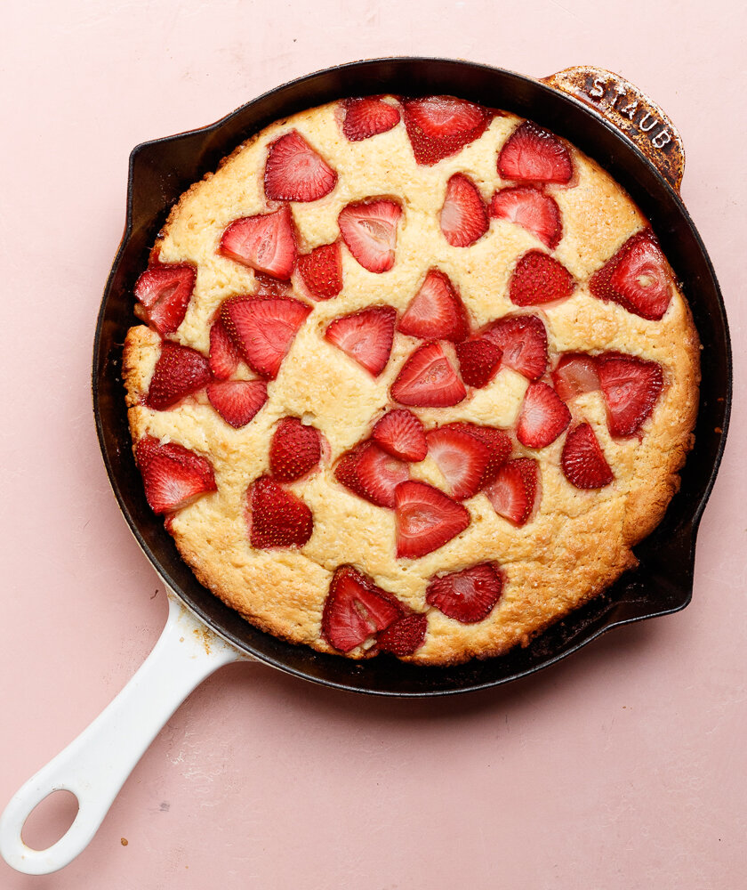

Description
For people like me, who can't make good pancakes, this recipe is perfect. Everything is cooked in the oven in one single skillet, giving the plus of easy clean up. Serve with maple syrup.
Ingredients
- 3 large eggs
- ¾ cup whole milk
- ½ teaspoon vanilla extract
- ¼ cup white sugar
- ¼ teaspoon salt
- ½ cup all-purpose flour
- ½ cup all-purpose flour
- 1 cup sliced fresh strawberries
Steps
- Preheat an oven to 425 degrees F (220 degrees C).
- Place the eggs, milk, vanilla extract, sugar, salt, and flour into a blender. Pulse until no dry lumps
remain in the batter. Melt the butter in an 8-inch, cast iron skillet over medium-high heat. Pour in the
batter, and drop in the strawberries.
- Place the skillet into the oven, and bake until puffed and golden, 20 to 25 minutes. Remove from the oven
and serve immediately.